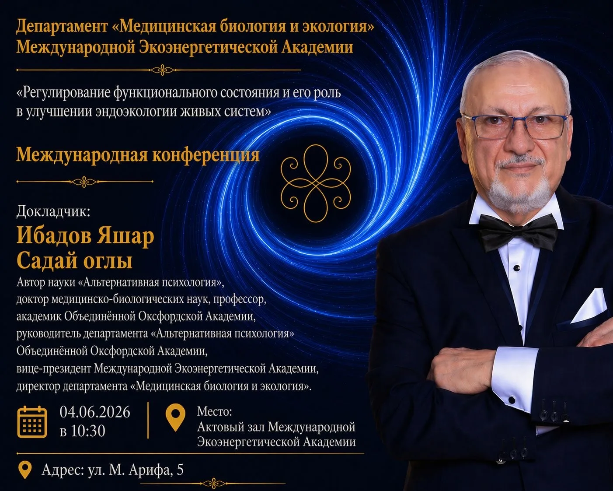

AZ
RU
EN
Canlı Sistemlərin Sağlam Gələcəyi Naminə:
Funksional Vəziyyət və Endoekologiya
Beynəlxalq Ekoenergetika Akademiyasının "Tibbi biologiya və Ekologiya" Departamenti –
həyat elmlərinin kəsişməsində yerləşən, insan sağlamlığı, biomüxtəliflik, ekosistemlərin qorunması və
biomühitdəki dəyişikliklərin orqanizmlərə təsirini öyrənən multidissiplinar bir struktur bölmədir.
Departament həm tədris, tədqiqat, həm də ictimai maarifləndirmə sahələrində fəaliyyət göstərir.
Departamentin direktoru İbadov Yaşar Saday oğlu "Alternativ Psixologiya" elminin müəllifi, Tibbi
biologiya elmlər doktoru, professor, Oksford Birləşmiş Akademiyasının akademiki, Birləsmiş Akademiyada
fəaliyyət göstərən "Alternativ Psixologiya" Departamentinin rəhbəri, BEA-nın vitse-prezdent, Avropa
Tibb Assosiasiyasının(EMA) Azərbaycandakı rəsmi nümayəndəsi.
Departametin xətti ilə mövcud ekoloji promlemlərin həlli istiqamətində "Alternativ
Psixologiya" elminin metodologiyasının praktiq tətbiqinə həsr olunmuş:
- "Tibb və Təhsildə Birgə İnteqrasiya"; Ekologiyanın psixologiya elmi ilə qarşılıq
əlaqəsi";
- "İnsan və ekoloji mühit: sağlam gələcəyin açarıdır";
- "Alternativ Psixologiya elminin insanların tibbi-psixoloji sağlamlığının qorunmasında
dünya təbabətinə gətirdiyi elmi yeniliklər;
- "Erkən Uşaq inkişafında Alternativ Psixologiya elminin metodlarının tətbiqi və
əhəmiyyəti",
- "Sağlam gənclik, Sağlam gələcək" mövzularında prezentasiyalar, "dəyirmi masa"lar,
elmi görüşlər keçirilmişdir.
"Funksional vəziyyətin tənzimlənməsi və onun canlı sistemlərin endoeoklogiyasının
yaxşılaşdırilmasında rolu" mövzusunda keçirilən Beynəlxalq konfransın əsas qayəsi - İnsana özü-özünün
xilaskarı olduğunu anlatmaq, onun mənəvi cəhətdən zəngin, dəyərli bir şəxsiyyət kimi formalaşmasına
kömək etmək, sağlam gənc nəslin formalaşdırılması, onların ekoloji biliklərinin inkişaf etdirilməsinə
nail olmaqdır.
Canlı sistemlərin funksional vəziyyətinin tənzimlənməsi müasir biologiya, tibb,
ekologiya və biofizika elmlərinin ən aktual istiqamətlərindən biri hesab olunur. İnsan orqanizminin və
digər canlı sistemlərin daxili ekoloji mühitinin qorunması, fizioloji proseslərin sabit saxlanılması
və sağlam həyat fəaliyyətinin təmin edilməsi elmi tədqiqatların əsas prioritet sahələrindəndir. Bu
baxımdan "Funksional vəziyyətin tənzimlənməsi və onun canlı sistemlərin endoekologiyasının
yaxşılaşdırılmasında rolu" mövzusunda keçirilən Beynəlxalq Konfrans xüsusi elmi əhəmiyyətə malikdir.
Konfransın əsas məqsədi funksional vəziyyətin idarə olunması, orqanizmin adaptasiya
imkanlarının artırılması, daxili ekoloji tarazlığın qorunması və sağlamlığın yaxşılaşdırılması
istiqamətində aparılan müasir elmi araşdırmaların müzakirəsi olmuşdur. Tədbirdə müxtəlif ölkələrdən
alimlər, tədqiqatçılar, həkimlər və mütəxəssislər iştirak edərək canlı sistemlərin funksional
vəziyyətinin bərpası və optimallaşdırılması sahəsində yeni yanaşmaları təqdim etmişlər.
Konfransın təqdimatçısı akademik Yaşar Saday oğlu İbadov çıxışında funksional
vəziyyətin tənzimlənməsinin nəzəri və praktik aspektlərini geniş şəkildə izah etmiş, canlı sistemlərin
endoekologiyasının yaxşılaşdırılmasının insan sağlamlığının qorunmasında mühüm rol oynadığını
vurğulamışdır. Akademik Yaşar İbadov qeyd etmişdir ki, orqanizmin daxili mühitinin ekoloji tarazlığı
pozulduqda müxtəlif funksional və xroniki xəstəliklərin yaranma riski artır. Bu səbəbdən funksional
vəziyyətin vaxtında diaqnostikası və düzgün tənzimlənməsi müasir tibbin əsas istiqamətlərindən biri
kimi qiymətləndirilməlidir.
Tədbir çərçivəsində bioenergetika, funksional diaqnostika, bioloji sistemlərin
adaptasiya mexanizmləri, stress faktorlarının canlı sistemlərə təsiri, eləcə də endoekoloji mühitin
sağlamlaşdırılması yolları barədə elmi məruzələr dinlənilmişdir. İştirakçılar arasında aparılan
müzakirələr yeni elmi əməkdaşlıqların qurulmasına və gələcək birgə tədqiqatların həyata keçirilməsinə
zəmin yaratmışdır.
Konfransın yekununda vurğulanmışdır ki, funksional vəziyyətin tənzimlənməsi yalnız
tibbi deyil, həm də ekoloji və sosial baxımdan mühüm əhəmiyyət daşıyır. Müasir dövrdə insan
sağlamlığının qorunması üçün canlı sistemlərin daxili ekoloji sabitliyinin təmin olunması vacib
şərtlərdən biridir.
Beynəlxalq Konfrans elmi biliklərin mübadiləsi, innovativ yanaşmaların təqdimatı və
multidissiplinar əməkdaşlığın inkişafı baxımından mühüm platforma olmuşdur.
Konfransda səsləndirilən əsas məruzələr
Konfrans çərçivəsində müxtəlif ölkələri təmsil edən alim və mütəxəssislər tərəfindən
aşağıdakı mövzularda məruzələr təqdim edilmişdir:
Lada İvanovna Litvinova (Rusiya) – "Konfrans iştirakçılarına və qonaqlarına xoş
gəlmisiniz. Layihənin qısa təqdimatı". Avropa Tibb Assosiasiyasının Şərqi və Cənubi Avropa və Mərkəzi
Asiya üzrə nümayəndəsi, işgüzar əməkdaşlıq proqramının təşəbbüskarı və direktoru.
Yaşar İbadov (Azərbaycan) – "Hərəkət istiqamətinin keyfiyyət nəzəriyyəsi. Vektor
vasitəsilə keyfiyyətin təzahürünün məkan-dinamik prinsipi". Tibb və biologiya elmləri doktoru,
"Alternativ psixologiya" Elminin müəllifi, BEA-nın vitse-prezidenti və Tibbi Biologiya və Ekologiya
Departamentinin direktoru.
Andrey Smirnov (Rusiya) – "İnsanın təkamül inkişafının yeni texnologiyaları".
Psixologiya üzrə fəlsəfə doktoru, professor.
Yuri Martsinişin (Ukrayna–Çexiya) – "Astral dünyanın kvant dalğaları,
enerji-informasiya və transsendental səviyyələri və təbiətin təkamül və reaktiv sahələri arasında
kvant keçid mexanizmləri". Akademik, tədqiqatçı alim, tamamlayıcı tibb və naturopatiya üzrə tibb
elmləri doktoru, ekologiya, inkişaf və psixologiya üzrə elmlər doktoru.
Elena Roslikova (Rusiya) – "Volqoqraddan nümunə götürməklə 'Şəhər'
sosial-ekoloji sisteminin faza vəziyyətinin korreksiyası üçün alternativ psixologiya üsullarının
tətbiqi". Beynəlxalq Alternativ Psixologiya Məktəbinin nümayəndəsi, Volqoqrad Sosial-Ekoloji
Mərkəzinin direktoru, psixoqraf, ekoloq və psixoloq.
Natalia Stepanovna Fir (Ukrayna) – "Psixologiya – Güvən Məkanı". Təbiət və
tamamlayıcı tibb elmləri doktoru, tibb elmləri namizədi, Oksford Akademik İttifaqının fəxri
professoru.
Olqa Vladimirovna Kovaleva (Ukrayna) – "Arterial hipertoniya və miofasiyal
sindromlu xəstələr üçün kompleks fiziki terapiya proqramı". Tibb elmləri namizədi, dosent, Zaporijjya
Milli Politexnik Universitetinin Fiziki terapiya və əmək terapiyası kafedrasının müdiri.
Mətanət Tarverdiyeva (Türkiyə) – "Alternativ psixologiya metodologiyalarının
konservativ müalicə və inkişaf perspektivləri ilə birgə inteqrativ tətbiqi". Həkim və beynəlxalq tibb
mütəxəssisi.
İradə Gülmalı Hacıyeva (Azərbaycan) – "Onurğa təbabəti və reabilitasiyasının
inkişafında müasir nailiyyətlər və beynəlxalq təcrübə". Professor, Avropa Tibb Assosiasiyasının fəxri
professoru, Vertebra Onurğa Tibb Mərkəzinin direktoru.
Yaşarqızı Cəmilə (Azərbaycan) – "Alternativ psixologiya metodologiyasının
ənənəvi psixologiyaya gətirdiyi innovasiyalar". Alternativ psixoloq və elmi tədqiqatçı.
Səidə Əliyeva (Azərbaycan) – "Alternativ psixologiya metodologiyasının
qadınların partnyordan sonrakı fəaliyyət vəziyyətinin və həyat keyfiyyətinin yaxşılaşdırılmasında
rolu". Tibb və psixologiya elmləri doktoru, ginekoloq.
Fərqanə Xaşımova (Azərbaycan) – "Art terapiya və alternativ psixologiya:
psixikanın öyrənilməsində simvolik təhlilin inteqrasiyası". Alternativ psixoloq və elmi tədqiqatçı.
Rufanə Əlizadə (Azərbaycan) – "Alternativ Psixologiyanın Metodologiyasında
Kosmosun Enerji-İnformasiya Diaqnostikası və Feng Shui ilə əlaqəsi". Alternativ psixologiya
mütəxəssisi və Feng Shui üzrə tədqiqatçı.
Naidə Selyaxova (Rusiya) – "Alternativ Psixologiyanın metodologiyası və
innovativ texnologiyaları əsasında gənc nəsildə yetkinlik mədəniyyətinin formalaşdırılması və
uyğunlaşdırılması". Alternativ psixoloq və psixoqraf.
İlahə Əliyeva (Azərbaycan) – "Klinik kosmetologiyanın inkişafı və estetik üz
korreksiyası istiqamətində Alternativ Psixologiyanın Metodologiyaları". Alternativ psixoloq, həkim və
elmi tədqiqatçı.
Azər Hümmətov (Azərbaycan) – "Tiroid düyünlərin müalicəsində qeyri-cərrahi
müalicə üsulları". Tibb üzrə fəlsəfə doktoru, Azərbaycan Tibb Universitetinin Tədris Cərrahiyyə
Kilinikasının cərrah-endokrinoloqu.
Konfrans çərçivəsində iştirakçılar arasında elmi-tədqiqat fəaliyyətinin
genişləndirilməsi, beynəlxalq elmi əlaqələrin möhkəmləndirilməsi və birgə layihələrin həyata
keçirilməsi məqsədilə Elmi Əməkdaşlıq Müqaviləsi imzalanmışdır. Müqavilə tərəflər arasında elm,
təhsil, innovasiya və səhiyyə sahələrində təcrübə mübadiləsinin aparılmasını, birgə elmi
araşdırmaların, konfransların, seminarların və digər akademik tədbirlərin təşkilini nəzərdə tutur. Bu
əməkdaşlığın gələcəkdə yeni elmi nailiyyətlərin əldə olunmasına və beynəlxalq tərəfdaşlıq əlaqələrinin
daha da inkişafına mühüm töhfə verəcəyi vurğulanmışdır.
Sağlam Gələcək Naminə!
Gəlin birlikdə sağlamlığımızı, doğmalarımızı və
dünyamızı qoruyaq!
Во имя здорового будущего живых систем:
функциональное состояние и эндоэкология

Департамент «Медицинская биология и экология», действующий при Международной
Экоэнергетической Академии, является междисциплинарным структурным подразделением, находящимся на
пересечении наук о жизни. Департамент занимается изучением здоровья человека, биоразнообразия, охраны
экосистем и влияния изменений биосреды на живые организмы. Он активно осуществляет деятельность в
сфере образования, научных исследований и общественного просвещения.
Директором департамента является академик Яшар Садай оглы Ибадов — доктор медицинских и
биологических наук, профессор, автор науки «Альтернативная психология», академик Оксфордской
Объединённой Академии, руководитель Департамента «Альтернативная психология» Объединённой Академии и
вице-президент Международной Экоэнергетической Академии, Официальный представитель Европейской
медицинской ассоциации (EMA) в Азербайджане.
По инициативе департамента были проведены многочисленные международные конференции,
круглые столы и научные встречи, посвящённые практическому применению методологии науки
«Альтернативная психология» в решении современных экологических проблем:
• «Интеграция медицины и образования»
• «Взаимосвязь экологии и психологии»
• «Человек и окружающая среда — ключ к здоровому будущему»
• «Научные инновации, внесённые альтернативной психологией в мировую медицину для
сохранения медицинско-психологического здоровья человека»
• «Применение и значение методов альтернативной психологии в раннем развитии ребёнка»
• «Здоровая молодёжь — здоровое будущее»
Основная миссия Международной конференции «Регуляция функционального состояния и её
роль в улучшении эндоэкологии живых систем» заключается в том, чтобы помочь человеку осознать
собственный внутренний потенциал, способствовать формированию духовно богатой личности, воспитанию
здорового молодого поколения и развитию экологического мышления.
Регуляция функционального состояния живых систем считается одним из наиболее актуальных
направлений современной биологии, медицины, экологии и биофизики. Сохранение внутренней экологической
среды организма человека и других живых систем, поддержание стабильности физиологических процессов и
обеспечение здоровой жизнедеятельности являются приоритетными направлениями научных исследований.
Основной целью конференции стало обсуждение современных научных исследований, связанных
с управлением функциональным состоянием организма, повышением адаптационных возможностей, сохранением
внутреннего экологического баланса и укреплением здоровья человека. В мероприятии приняли участие
учёные, исследователи, врачи и специалисты из различных стран мира, представившие новые подходы к
восстановлению и оптимизации функционального состояния живых систем.
В своём выступлении академик Яшар Ибадов подробно осветил теоретические и практические
аспекты регуляции функционального состояния, подчеркнув важную роль улучшения эндоэкологии в
сохранении здоровья человека. Он отметил, что нарушение экологического равновесия внутренней среды
организма повышает риск развития различных функциональных и хронических заболеваний. В связи с этим
своевременная диагностика и правильная регуляция функционального состояния должны рассматриваться как
одно из ключевых направлений современной медицины.
В рамках конференции были заслушаны научные доклады по биоэнергетике, функциональной
диагностике, адаптационным механизмам биологических систем, влиянию стрессовых факторов на живые
организмы, а также методам оздоровления эндоэкологической среды. Проведённые дискуссии способствовали
развитию международного научного сотрудничества и созданию основы для будущих совместных исследований.
В заключение конференции было подчеркнуто, что регуляция функционального состояния
имеет важное значение не только с медицинской, но и с экологической и социальной точек зрения. В
современных условиях обеспечение внутренней экологической стабильности живых систем является одним из
важнейших условий сохранения здоровья человека.
Международная конференция стала значимой платформой для обмена научными знаниями,
представления инновационных подходов и развития междисциплинарного сотрудничества.
Основные доклады, представленные на конференции
В рамках конференции учёные и специалисты из разных стран выступили с докладами по
следующим темам:
Лада Ивановна Литвинова (Россия) — «Добро пожаловать участникам и гостям
конференции. Краткая презентация проекта».
Яшар Ибадов (Азербайджан) — «Теория качества направления движения.
Пространственно-динамический принцип проявления качества через вектор».
Андрей Смирнов (Россия) — «Новые технологии эволюционного развития человека».
Юрий Марцинишин (Украина–Чехия) — «Квантовые волны астрального мира,
энергоинформационные и трансцендентальные уровни и механизмы квантовых переходов между эволюционными и
реактивными полями природы».
Елена Росликова (Россия) — «Применение методов альтернативной психологии для
коррекции фазового состояния социально-экологической системы "Город" на примере Волгограда».
Наталия Степановна Фир (Украина) — «Психология — пространство доверия».
Ольга Владимировна Ковалёва (Украина) — «Комплексная программа физической
терапии для пациентов с артериальной гипертензией и миофасциальным синдромом».
Метанет Тарвердиева (Турция) — «Интегративное применение методологий
альтернативной психологии совместно с консервативным лечением и перспективами развития».
Ирада Гюльмалы Гаджиева (Азербайджан) — «Современные достижения и международный
опыт в развитии вертебрологии и реабилитации позвоночника».
Джамиля Яшаргызы (Азербайджан) — «Инновации, внесённые методологией
альтернативной психологии в традиционную психологию».
Саида Алиева (Азербайджан) — «Роль методологии альтернативной психологии в
улучшении функционального состояния и качества жизни женщин после расставания с партнёром».
Фаргана Хашимова (Азербайджан) — «Арт-терапия и альтернативная психология:
интеграция символического анализа в изучении психики».
Руфана Ализаде (Азербайджан) — «Энергоинформационная диагностика космоса в
методологии альтернативной психологии и её связь с Фэн-шуй».
Наида Селяхова (Россия) — «Формирование и адаптация культуры зрелости молодого
поколения на основе методологии и инновационных технологий альтернативной психологии».
Илаха Алиева (Азербайджан) — «Методологии альтернативной психологии в развитии
клинической косметологии и эстетической коррекции лица».
Азер Гумматов (Азербайджан) — «Нехирургические методы лечения узлов щитовидной
железы».
В рамках конференции было подписано Соглашение о научном сотрудничестве с целью
расширения научно-исследовательской деятельности, укрепления международных научных связей и реализации
совместных проектов. Соглашение предусматривает обмен опытом в области науки, образования, инноваций и
здравоохранения, а также организацию совместных научных исследований, конференций, семинаров и других
академических мероприятий.
Во имя здорового будущего!
Давайте вместе сохранять наш мир, наших близких и
наше здоровье!
For the Healthy Future of Living Systems:
Functional State and Endoecology
The Department of Medical Biology and Ecology operating under the International
Ecoenergy Academy is a multidisciplinary structural division situated at the intersection of life
sciences. The department studies human health, biodiversity, ecosystem protection, and the impact of
environmental changes on living organisms. It actively operates in the fields of education, scientific
research, and public awareness.
The Director of the Department is Academician Yashar Saday oglu Ibadov — Doctor of
Medical and Biological Sciences, Professor, founder of the science of "Alternative Psychology,"
Academician of the Oxford United Academy, Head of the Department of Alternative Psychology within the
United Academy, and Vice-President of the International Ecoenergy Academy, Official representative of
the European Medical Association (EMA) in Azerbaijan.
Under the leadership of the Department, numerous conferences, round tables, and
scientific meetings devoted to the practical application of the methodology of Alternative Psychology
in solving current ecological problems have been organized on the following topics:
• "Integration in Medicine and Education"
• "The Interrelation Between Ecology and Psychology"
• "Human and Environment: The Key to a Healthy Future"
• "Scientific Innovations Introduced to World Medicine by Alternative Psychology in
Protecting Medical and Psychological Health"
• "The Application and Importance of Alternative Psychology Methods in Early Childhood
Development"
• "Healthy Youth, Healthy Future"
The primary mission of the International Conferences entitled "Regulation of Functional
State and Its Role in Improving the Endoecology of Living Systems" is to help individuals realize
their inner potential, develop as spiritually rich and valuable personalities, contribute to the
upbringing of a healthy younger generation, and promote ecological awareness.
The regulation of the functional state of living systems is considered one of the most
relevant areas of modern biology, medicine, ecology, and biophysics. Preserving the internal
ecological environment of the human organism and other living systems, maintaining physiological
stability, and ensuring healthy life activity are among the main priorities of scientific research. In
this regard, the International Conference dedicated to "Regulation of Functional State and Its Role in
Improving the Endoecology of Living Systems" holds particular scientific significance.
The main objective of the conference was to discuss modern scientific research
concerning functional state management, enhancement of adaptive capacities, preservation of internal
ecological balance, and improvement of health conditions. Scientists, researchers, physicians, and
specialists from different countries participated in the event and presented innovative approaches to
the restoration and optimization of the functional state of living systems.
In his speech, Academician Yashar Saday oglu Ibadov thoroughly explained the
theoretical and practical aspects of regulating functional states and emphasized the important role of
improving endoecology in protecting human health. He noted that disturbances in the ecological balance
of the organism's internal environment increase the risk of various functional and chronic diseases.
Therefore, timely diagnostics and proper regulation of functional states should be regarded as one of
the key priorities of modern medicine.
Within the framework of the conference, scientific reports were presented on
bioenergetics, functional diagnostics, adaptation mechanisms of biological systems, the impact of
stress factors on living organisms, and methods for improving the endoecological environment. The
discussions among participants created a strong foundation for new scientific collaborations and
future joint research projects.
At the conclusion of the conference, it was emphasized that the regulation of
functional states is important not only from a medical perspective but also from ecological and social
viewpoints. In the modern era, ensuring the internal ecological stability of living systems is one of
the essential conditions for protecting human health.
The International Conference became an important platform for the exchange of
scientific knowledge, the presentation of innovative approaches, and the development of
multidisciplinary cooperation.
Main Presentations Delivered at the Conference
Within the framework of the conference, scientists and specialists representing various
countries delivered presentations on the following topics:
Lada Litvinova (Russia) — "Welcome to the conference participants and guests.
Brief presentation of the project." Representative of the European Medical Association for Eastern and
Southern Europe and Central Asia; initiator and director of the business cooperation program.
Yashar Ibadov (Azerbaijan) — "Theory of Quality of Direction of Movement. The
Spatial-Dynamic Principle of Quality Manifestation through Vector." Doctor of Medical and Biological
Sciences, founder of Alternative Psychology, Vice-President of the International Ecoenergy Academy,
and Director of the Department of Medical Biology and Ecology.
Andrey Smirnov (Russia) — "New Technologies of Human Evolutionary Development."
PhD in Psychology, Professor.
Yuri Martsinishin (Ukraine–Czech Republic) — "Quantum Waves of the Astral World,
Energy-Informational and Transcendental Levels, and Quantum Transition Mechanisms Between Evolutionary
and Reactive Fields of Nature." Academician, researcher, Doctor of Medical Sciences in complementary
medicine and naturopathy, Doctor of Sciences in ecology, development, and psychology.
Elena Roslikova (Russia) — "Application of Alternative Psychology Methods for
Correcting the Phase State of the 'City' Socio-Ecological System Using Volgograd as an Example."
Representative of the International School of Alternative Psychology, Director of the Volgograd
Socio-Ecological Center, psychography specialist, ecologist, and psychologist.
Natalia Fir (Ukraine) — "Psychology — The Space of Trust." Doctor of Natural and
Complementary Medical Sciences, Candidate of Medical Sciences, Honorary Professor of the Oxford
Academic Union.
Olga Kovaleva (Ukraine) — "Comprehensive Physical Therapy Program for Patients
with Arterial Hypertension and Myofascial Syndrome." Candidate of Medical Sciences, Associate
Professor, Head of the Department of Physical and Occupational Therapy at Zaporizhzhia National
Polytechnic University.
Matanat Tarverdiyeva (Türkiye) — "Integrative Application of Alternative
Psychology Methodologies Together with Conservative Treatment and Development Perspectives." Physician
and international medical specialist.
Irada Gulmali Hajiyeva (Azerbaijan) — "Modern Achievements and International
Experience in the Development of Spinal Medicine and Rehabilitation." Professor, Honorary Professor of
the European Medical Association, Director of the Vertebra Spine Medical Center.
Jamila Yashargizi (Azerbaijan) — "Innovations Introduced by the Methodology of
Alternative Psychology into Traditional Psychology." Alternative psychologist and scientific
researcher.
Saida Aliyeva (Azerbaijan) — "The Role of Alternative Psychology Methodology in
Improving Women's Functional State and Quality of Life After Partner Separation." Doctor of Medical
and Psychological Sciences, gynecologist.
Fargana Hashimova (Azerbaijan) — "Art Therapy and Alternative Psychology:
Integration of Symbolic Analysis in the Study of the Psyche." Alternative psychologist and scientific
researcher.
Rufana Alizade (Azerbaijan) — "Energy-Informational Diagnostics of Space in the
Methodology of Alternative Psychology and Its Relation to Feng Shui." Specialist in Alternative
Psychology and Feng Shui researcher.
Naida Selyakhova (Russia) — "Formation and Adaptation of Maturity Culture in the
Younger Generation Based on the Methodology and Innovative Technologies of Alternative Psychology."
Alternative psychologist and psychograph specialist.
Ilaha Aliyeva (Azerbaijan) — "Methodologies of Alternative Psychology in the
Development of Clinical Cosmetology and Aesthetic Facial Correction." Alternative psychologist,
physician, and scientific researcher.
Azer Hummatov (Azerbaijan) — "Non-Surgical Treatment Methods for Thyroid
Nodules." PhD in Medical Sciences, surgeon-endocrinologist at the Educational Surgery Clinic of
Azerbaijan Medical University.
Within the framework of the conference, a Scientific Cooperation Agreement was signed
to expand scientific research activities, strengthen international scientific relations, and implement
joint projects. The agreement envisages the exchange of experience in science, education, innovation,
and healthcare, as well as the organization of joint scientific research, conferences, seminars, and
other academic events. It was emphasized that this cooperation would make a significant contribution
to future scientific achievements and the further development of international partnerships.
To a Healthy Future!
Let us protect our world, our loved ones, and our health
together!